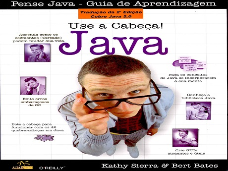

Use a Cabeça! Java

Use a Cabeça! Java

'Use a Cabeça Java' é uma experiência completa de aprendizado em programação orientada a objetos (OO) e Java. Projetado de acordo com princípios de aprendizado mentalmente amigáveis, este livro o mostrará tudo, dos aspectos básico da linguagem a tópicos avançados que incluem segmentos, soquetes de rede e programação distribuída. O mais importante é que você aprenderá a pensar como um desenvolvedor orientado a objetos. Você vai participar de jogos, resolver quebra-cabeças, refletir sobre mistérios e interagir com Java de formas nunca imaginadas. No decorrer da leitura, você escreverá muitos códigos Java reais, inclusive o jogo 'sink a dot com' e o cliente de bate-papo de uma rede. A abordagem de aprendizado da série Use a Cabeça o ajudará a memorizar rapidamente o conhecimento de maneira permanente. Prepare-se para abrir sua mente enquanto aprende (e compreende) tópicos-chave, entre eles - A linguagem Java; Desenvolvimento orientado a objetos; Criação, teste e implantação de aplicativos; Uso da biblioteca do API Java; Manipulação de exceções; Uso de vários segmentos; Programação de GUI com o Swing; Rede com RMI e soquetes; Conjuntos e tipos genéricos.
Categoria: Programação, tecnologia.
Saiba Mais